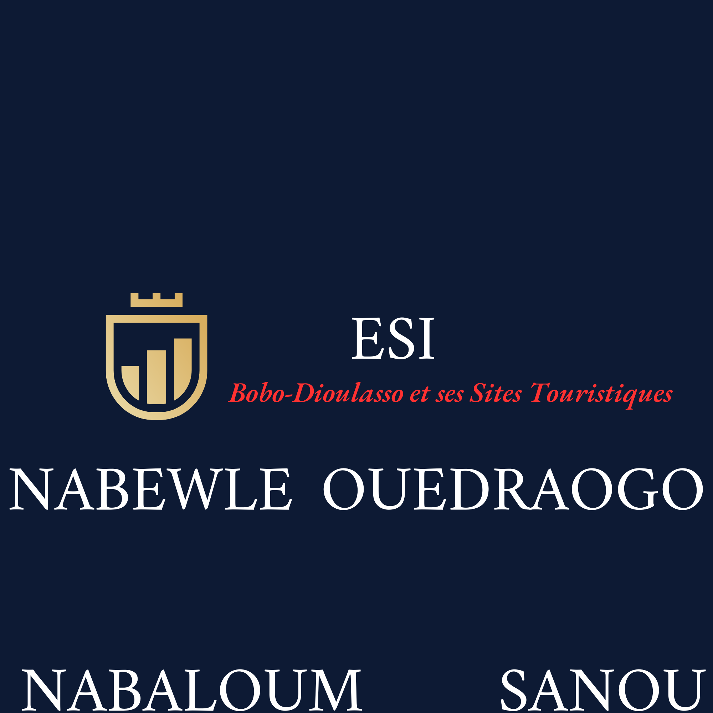
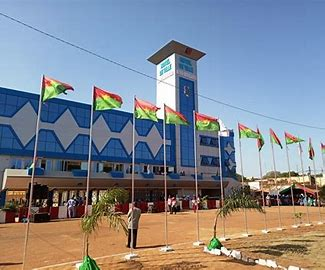
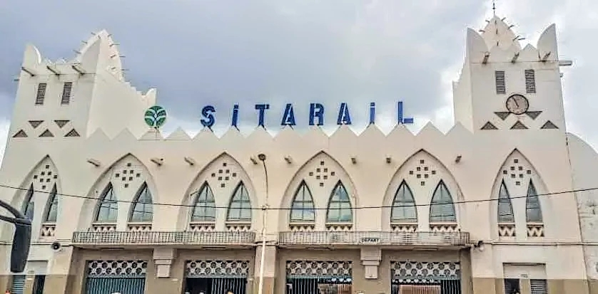
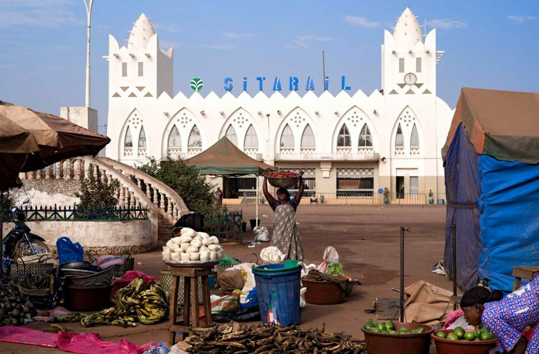
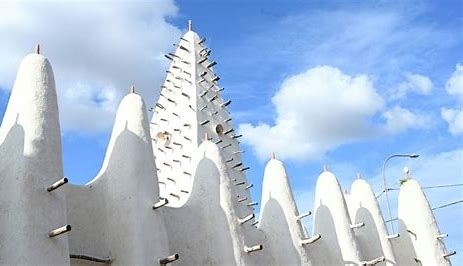

 <!DOCTYPE html>
<html>
<head>
     <meta name="viewport" content="width=device-width,initial-scale=1.0>
	 <meta charset="utf-8"/>
	 <link rel="stylesheet" href="style10.css"/>
	 <title>Les sites touristiques de Bobo-Dioulasso</title>
<script type="text/javascript" src="https://me.Kis.v2.src.Kaspersky-labs.com/FD126C42-EBFA-4E12-B309-BB3FDD723QC1/main.js?attr=j_UxM2TzP44kNn6JeVL2Wxp5tEct9JLBAs0hDl307_Z7Ab8KxutTi3QRxZ10Kl3RCsxYpTDXyhNM_25W_TX-tnnhk1jPq1KmC8BY4pgTHemZK_OombaOkiiEIWLhns4-" charset="UTF-8></script></head>
<body>
    <div id="blocage">
	    <header>
		    <div id="titre principale">
			     
				 <h1 class="titre">Bobo-Dioulasso et ses sites touristiques</h1>
			</div>
			<nav class="navi">
			    <ul>
				   <li><a href="index.html">Accueil</a></li>
				   <li><a href="Patrimoine3.html">Patrimoine</a></li>
				   <li><a href="reservation d'hotel1.html">Reservation d'hotel</a></li>
				   <li><a href="galerie.html"</a></li>
				</ul>
			</nav>
		</header>
 </div>
 
 <section>
     <div class="top">
	     <article>
		     <div class="carousel">
			     <div class="slide">
				      
					  
					  
					  
					  
				</div>
		    </div>
			<h1>Description de la ville</h1>
			<p>Bobo-Dioulasso est la prémière ville la plus densément peuplée du Burkina Faso, après Ouagadougou.Elle joue un rôle clé en tant que capitale économique du pays.De plus Bobo-Dioulasso est le chef lieu de la région du Guiriko, ainsi de la province du Houet, et elle est egalement la préfecture du département portant le même nom.</p>
		    <h4>Géographie etEconomie</h4>
			<p>Située à l'ouest du Burkina Faso, Bobo-Dioulasso couvre une superficie de 1595,7 km² et comptait au recensement de 2019, 984 603 habitants et 989 967 habitants en 2023. Son climat est de type sud-soudanien, caracterisé par une pluviométrie annuelle comprise entre 900 et 1100 mm, avec des précipitations s'étalant sur quatre à six mois.</p>
			<p>En raison de sa position géographique, la commune de Bobo-Dioulasso est un carrefour important pour le commerce, les transports et l'industrie. En effet, le repertoire de la chambre de commerce dénombre 180 établissements de commerce. L'essentiel  du tissu industriel bobolais est constitué par l'agro-alimentaire (Brakina, etc), par l'agro-industrie (Sofitex, etc.), et par l'industrie légère (Sonaceb cartonnage, etc). Notons que le coton est l'une des principales richesses de la ville et du pays. La ville est réliée par le transport aérien avec l'aéroport de Bobo-Dioulasso. Le transport ferroviaire est assuré^par un chemain de fer allant de la gare de Bobo à Abidjan et un vaste réseau routier reliant l'axe sud-est du Mali jusqu'au port de Lomé au Togo en traversant le Ghana.</p>
			<h4>Histoire et Culture</h4>
			<p>Poste admininistratif et militaire dès 1897, la ville actuelle de Bobo-Dioulasso a connu un long cheminement. En effet, elle a pris naissance et s'est développée à partir d'un petit village appelé <<Kibidoué >> fondé par des agriculteurs Bobo et des commerçants Dioula venant du Mandé vers 1050.Ces agriculteurs Bobo, après s'être installés sous le << Kibi >> qui signifie arbre en Bobo, décièrent de baptiser leur village << Kibidoué >>. Par la suite, Kibidoué donna << Sya >>, village plus gros avec l'arrivée progressive des commerçants Dioulas de la dynastie des watara du royaume Kong(Cote d'Ivoire). Ils fondèrent le royaume du Guiriko avec Sya comme capitale. La ville accueille aussi d'autres migrants venus du Sud. Cette arrivée des dioulas a généré une ethnie metissée appelé Bobo-Dioula occupant l'actuel quarier de Dioulassoba qui signifie la grande famille des Dioulas </p>
			<p>La légndre consacre plusieurs versions à cette appellation d Sya et l'une des versions dit que Sya était le nom d'une jeune vendeuse de dolo à Kibidoué, réputée pour sa générosité. en 1904, le colonel Caudrelier baptiste la ville Bobo-Dioulasso, ce qui, littéralement traduit du dioula, signifie la << la maison des Bobo-dioula>>.</p>
			<p>Bobo- Dioulasso est considerée comme la perle touristique et culturelle du Bukina Faso en raison de se sites touristiques tels que la mosquée de Dioulassob-â, la Guinguette, Dafra, le Musée communal Sogossira Sanon, le Maussolé Guimbi OUATTARA, ainsi que ses Masques, Balafons, batiks et le tissu populaire "Koko dunda". La Semaine Nationale de la Culture (SNC), créée en 1983 par le Président Thomas SANKARA, vise à promouvoir la diversité culturelle du Burkina Faso. Depuis 1990, cet évènement a lieu tous les deux ans à Bobo-Dioulasso.</p>
	    </article>
	</div>
</section>

<a href="#top"></a>

<footer>
    <div id="identite">
	    <h3>Identité des auteurs</h3>
		<p>NABEWLE SOMDA Kô Sylvain</p>
		<p>OUEDRAOGO Athanase</p>
		<p>Nabaloum Awa </>
		<p>SANOU Issa Latif</P>
	</div>
	<div id="contacte">
	     <h4>contacts:</h4>
		 <p>+226 56685072</p>
		 <p>+226 65377159</p>
		 <p>+226 66343611</p>
		 <p>+226 55432598</p>
	</div>
	<div id="social_media">
	    <a href="https://www.facebook.com" target="_blank"></a>	
	    <a href="https://www.watsapp.com" target="_blank"></a>
	    <a href="https://www.instagram.com" target="_blank"></a>
    </div>
</footer>

<script src="js de l'accueil7.js"></script>
</body>
</html>
	

	
	